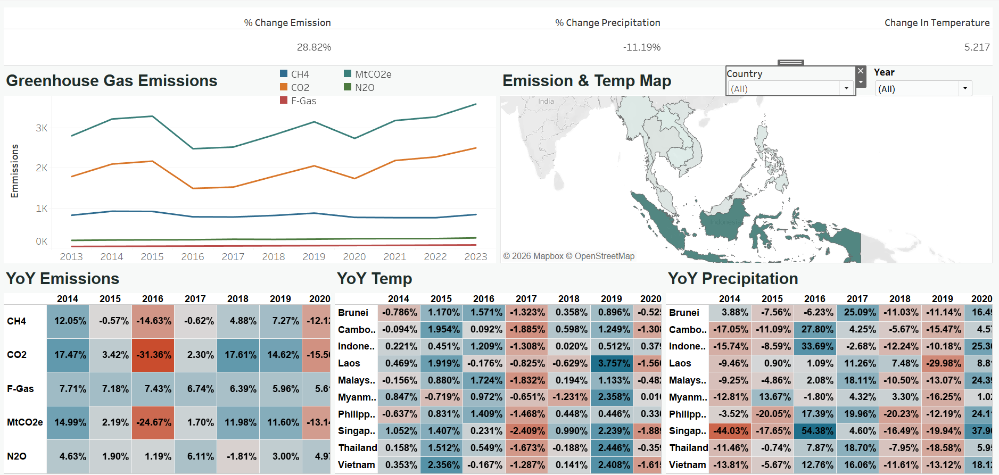
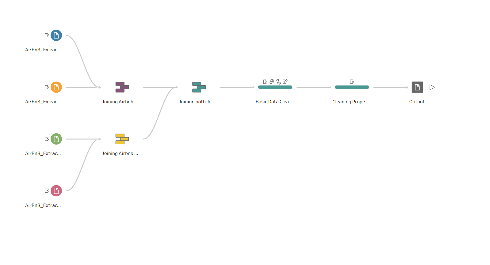

Data Analytics & Business Intelligence
for better decision making
I help businesses turn complex data into clear, actionable insights through interactive dashboards, automated reporting systems, and advanced analysis using Power BI, Excel, and Google Sheets.

Power BI & Tableau Dashboards
I build interactive, real-time dashboards that turn your data into clear, actionable insights — so you can track performance, spot trends early, make faster decisions, and present compelling stories to stakeholders or executives.
- Automated sales, marketing & e-commerce performance dashboards
- Executive KPI & financial overview dashboards
- Real-time reporting with live data connections
- Advanced data integration & ETL pipelines
- Visual storytelling & interactive drill-down reports
- Custom solutions that save 10–30+ hours/month on manual reporting
Excel & Google Sheets Systems
I create powerful, automated Excel and Google Sheets solutions that eliminate repetitive work, deliver accurate calculations instantly, and give you reliable tools you can reuse or even sell to your own clients.
- Custom financial models, trackers & commission calculators
- Automated reporting templates (weekly/monthly dashboards)
- Advanced Power Query, Power Pivot & DAX for large datasets
- Student performance tracking & progress monitoring systems
- Workflow automation that saves 20–40+ hours per report cycle
- Fixing complex formulas, error-proofing, and building sellable templates

Data Analysis
I clean, structure and deeply analyze your data to uncover hidden patterns, answer critical business questions, and deliver insights that drive better decisions and higher profitability.
- End-to-end data cleaning & transformation
- Pattern discovery, trend analysis & root-cause investigation
- Customer, sales, marketing & operational performance insights
- Ad-hoc analysis to answer urgent business questions
- Robust, maintainable data systems that scale with your growth
Data Automation
I build fully automated workflows that eliminate manual data handling, reduce errors, and let your reports refresh automatically — freeing up your time for strategy instead of repetitive tasks.
- Power Query & Python-powered data pipelines
- Automated report generation & distribution
- Scheduled data refreshes & error-proof systems
- Custom scripts that save 20–50+ hours per month
- Maintainable automation that grows with your business
Work Samples
Client projects built with Excel/Google Sheets, Power BI and Tableau — delivering powerful financial tracking, workforce analytics, budget oversight, project planning, sales insights, customer analysis and environmental reporting.
Financial Tracker
Comprehensive income, expense, savings and category analysis dashboard with monthly trends and change tracking — helps users gain full visibility into cash flow and improve financial discipline.
Services available in: Excel / Google Sheets
(Built with Excel + Power Query, Power Pivot, DAX)

HR Attrition & Retention Analytics
Department/role-based attrition rates, retention insights, demographics, work-life balance and job satisfaction analysis — enables HR to identify turnover drivers and build stronger, more engaged teams.
Services available in: Excel / Google Sheets
(Built with Excel + Power Query, Power Pivot, DAX)

Project Portfolio & Budget Utilization Tracker
Monthly progress %, budget utilization, top projects by spend/progress, and financial overview dashboard — helps portfolio managers control costs, detect delays and ensure on-time, on-budget delivery.
Services available in: Excel / Google Sheets
(Built with Excel)

Project Timeline & Task Gantt Chart
Detailed task planning, start/end dates, duration, status tracking and visual Gantt view — enables teams to plan, track and manage project timelines effectively with clear visibility of progress and delays.
Services available in: Excel / Google Sheets
(Built with Google Sheets, fully replicable in Excel)

Amazon Seller Performance Dashboard
Daily/weekly sales, units sold, AOV, margin %, SKU-level breakdown and fee analysis — empowers sellers to track profitability, optimize pricing and scale more effectively.
Services available in: Power BI

Bank Loan Portfolio & Risk Analysis
Loan amounts, funded/invested status, charge-off rates, payment behavior by verification/state — supports risk teams in monitoring repayment trends and optimizing lending decisions.
Services available in: Power BI

Customer Spend & Distribution Analysis
Spend trends by month, segment, employment status, age, country/state with geographic visualization — helps businesses understand customer behavior and optimize targeting/marketing spend.
Services available in: Tableau (with Tableau Prep)

Greenhouse Gas Emissions & Climate Impact Analysis
Year-over-year changes in emissions (CH4, CO2, N2O, F-Gas), precipitation and temperature by country with interactive maps — supports environmental analysis and sustainability reporting.
Services available in: Tableau

Project Workflow & Process Visualization
End-to-end task flow, dependencies, timelines and status overview — clarifies project structure and progress tracking (can be animated with slide transitions for presentations).
Services available in: Power BI & Tableau
(Static diagram shown; animation possible via transitions or GIF export)
.png)
.png)
.png)
.png)
.png)
.png)
.png)
.png)
.png)
.png)
.png)
.png)
.png)
.png)
.png)
.png)
.png)
.png)
.png)
.png)
.png)
.png)